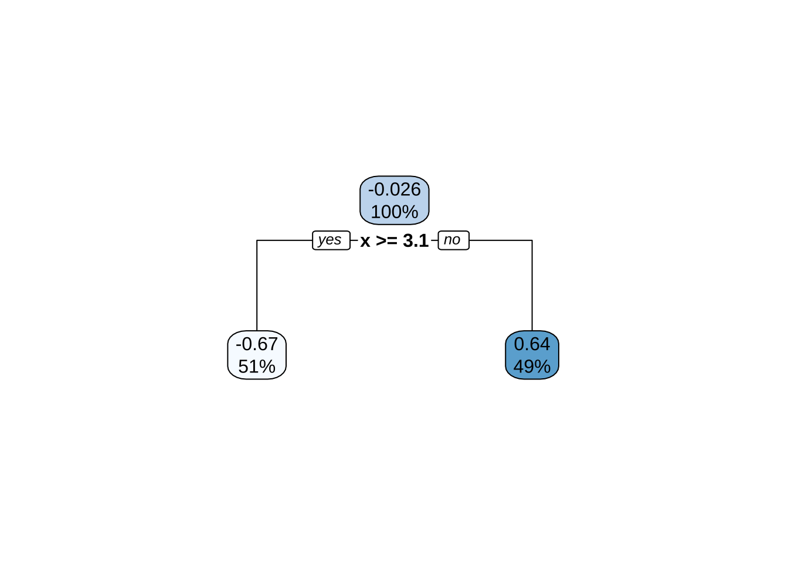
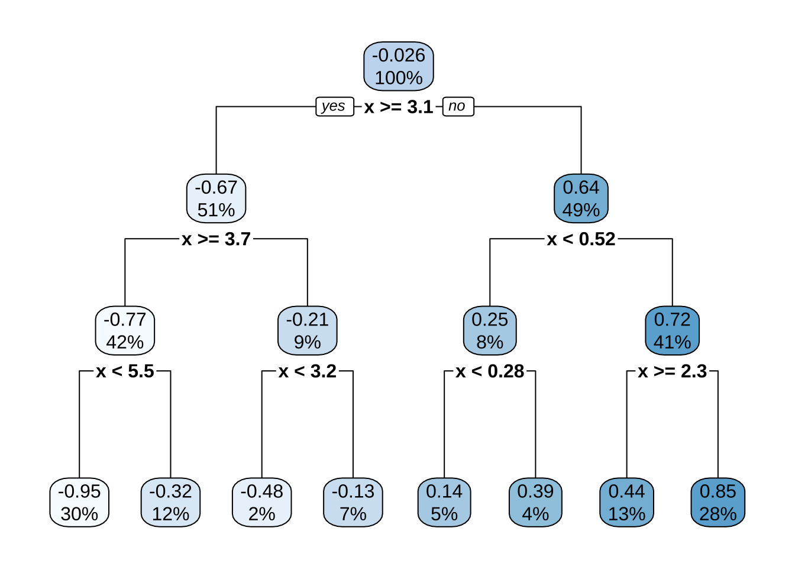
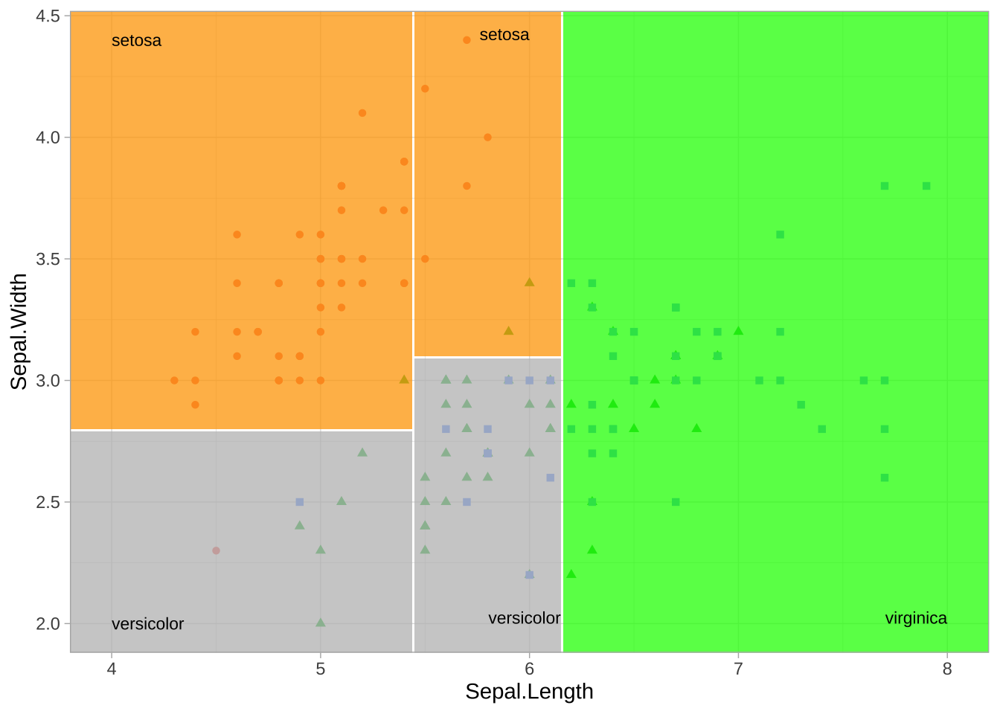
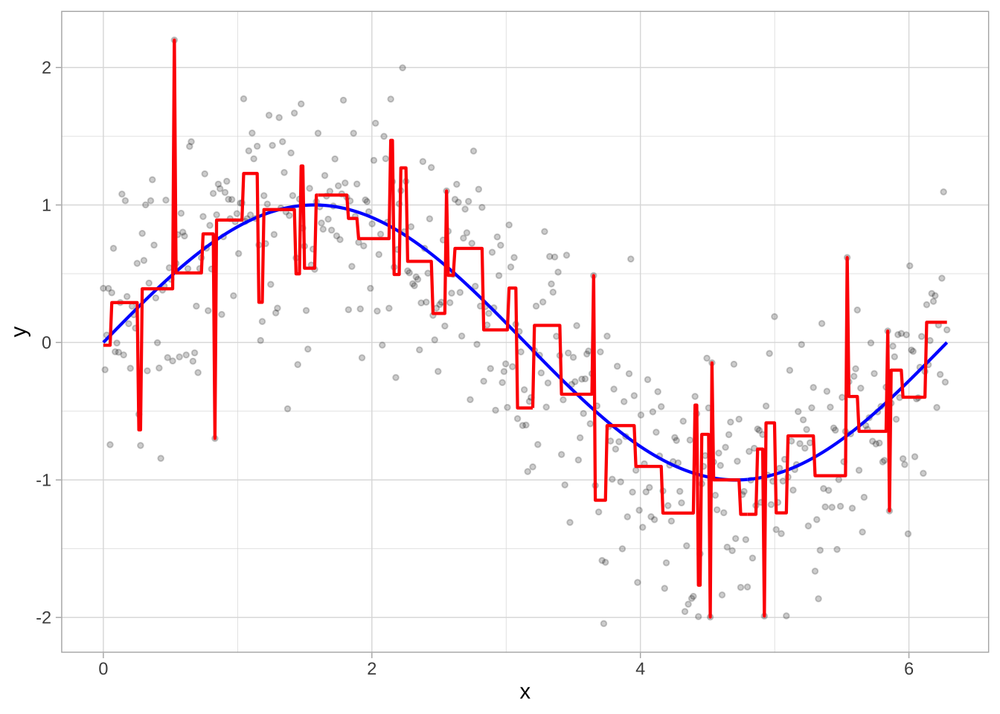
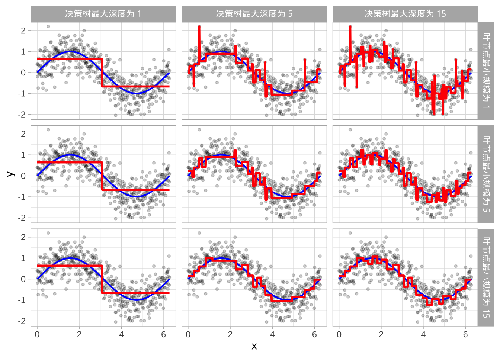
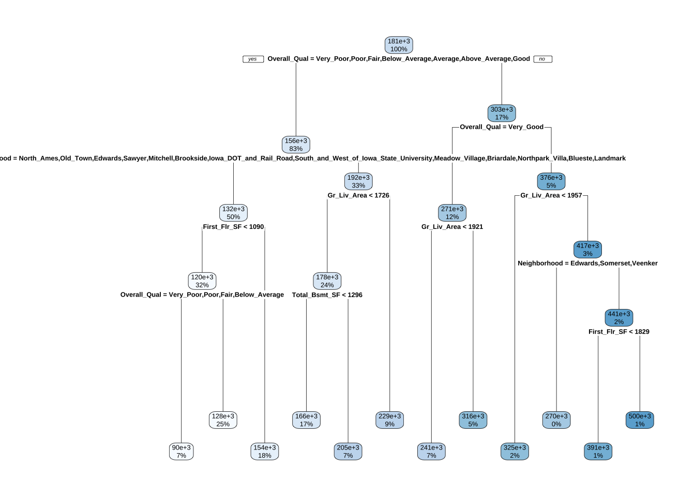
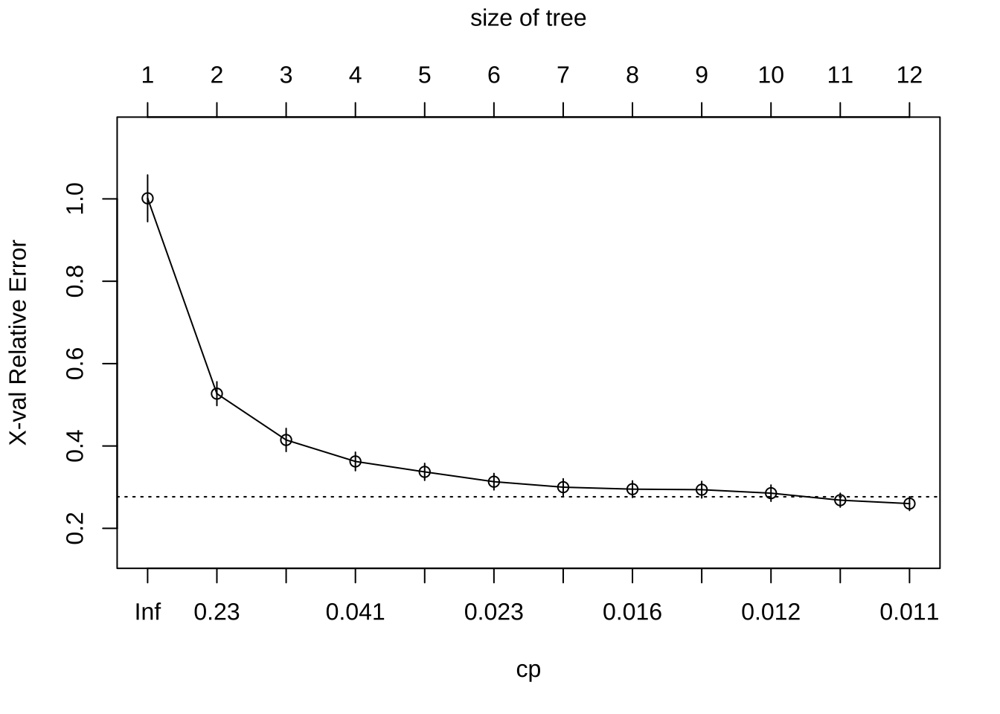
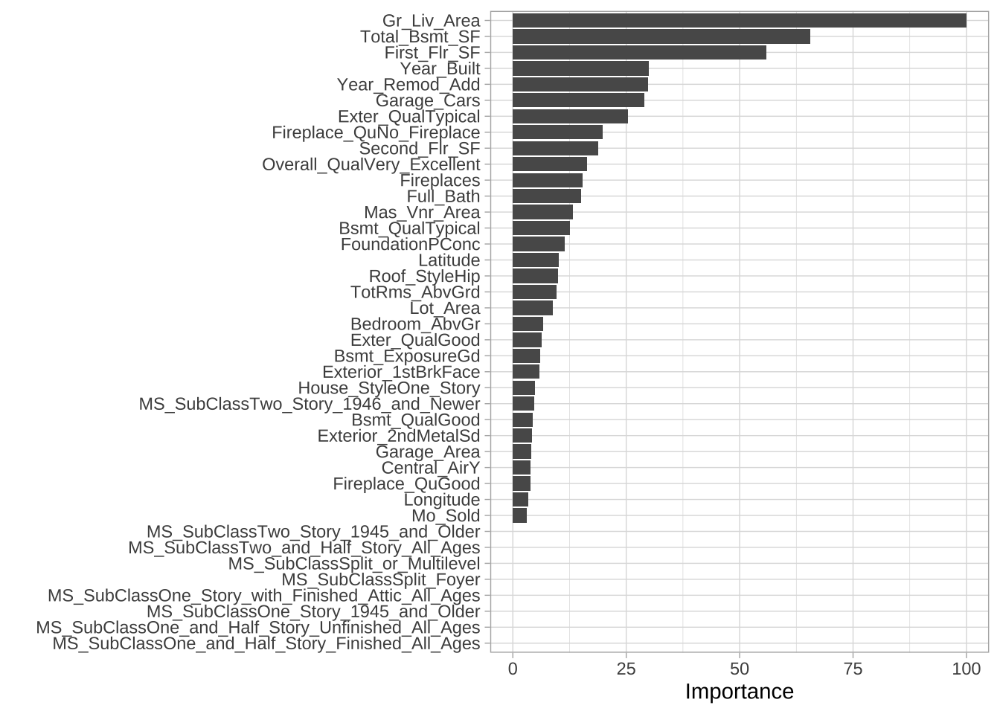
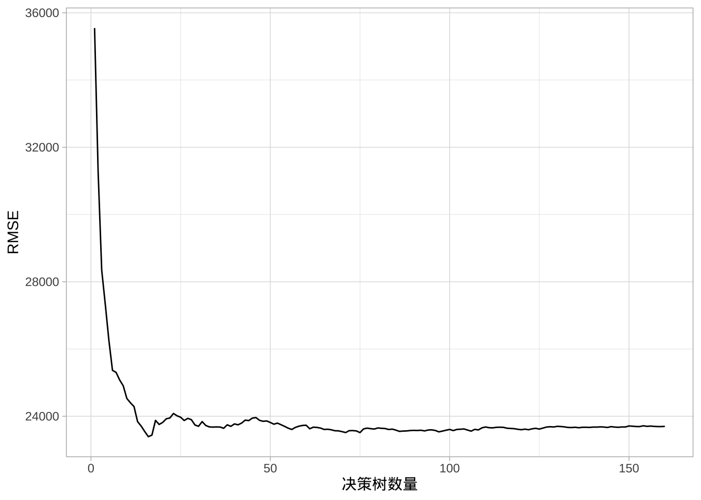

# 辅助包
library(dplyr) # 用于数据处理
library(ggplot2) # 用于出色的绘图
# 建模包
library(rpart) # 决策树直接引擎
library(caret) # 决策树元引擎
# 模型解释包
library(rpart.plot) # 用于绘制决策树
library(vip) # 用于特征重要性
library(pdp) # 用于特征效应有监督学习：决策树
1 决策树
基于树的模型是一类非参数算法，通过使用一组分割规则将特征空间划分为多个较小的（非重叠）区域，这些区域具有相似的响应值。在每个区域内拟合一个简单模型（例如，区域内响应值的平均值）来获得预测值。这种分而治之的方法可以产生简单易解释的规则，并可以通过树形图进行可视化。单个决策树的预测性能通常较弱，但是通过集成算法（如随机森林和梯度提升机）可以组合多个决策树构建预测能力更强的模型。
1.1 工具和数据
使用以下R包：
使用Ames住房示例来展示主要概念。
ames <- AmesHousing::make_ames()
library(rsample)
# 分层抽样划分训练集和测试集数据
set.seed(123)
split <- initial_split(ames, prop = 0.7, strata = "Sale_Price")
ames_train <- training(split)
ames_test <- testing(split)2.2 决策树的结构
构建决策树有许多方法，但最常见的是分类与回归树（CART）算法。基本的决策树将训练数据划分为同质子组（即响应值相似的群体），然后在每个子组内拟合一个简单常数（例如，回归问题中子组内响应值的均值）。子组（也称为节点）是通过使用二元分割递归形成，每次分割基于对每个特征的简单“是否”问题进行（例如，年龄<18岁？）。这一过程重复多次，直到满足适当的停止标准（例如，达到树的最大深度）。在所有分区完成后，模型根据不同的问题的需要预测输出，对于回归问题，使用落入该子组的所有观测值的平均响应值输出预测；对于分类问题，使用子组内占多数的类别预测，同时可以使用子组内各类别的比例获得预测概率。
结果是一个倒挂的树形结构，本质上，决策树是一组规则，允许通过对每个特征提出简单的“是否”问题来进行预测。例如，如果客户是忠诚客户，家庭收入超过15万美元，并且在商店购物，下面示例的决策树将预测客户会兑换优惠券。

将树的顶部第一个子组称为根节点（此节点包含所有训练数据）。树底部的最终子组称为终端节点或叶节点。之间的子组称为内部节点。节点之间的连接称为分支。

2.3 分区
CART使用二元递归分区（递归是因为每个分割或规则依赖于其上方的分割）。每个节点的目标是找到“最佳”特征（\(x_i\)）将剩余数据划分为两个区域（\(R_1\) 和 \(R_2\)），使实际响应值（\(y_i\)）与预测常数（\(c_i\)）之间的总体误差最小化。对于回归问题，要最小化的目标函数是总平方误差和（SSE），如方程定义：
\[ SSE = \sum_{i \in R_1} (y_i - c_1)^2 + \sum_{i \in R_2} (y_i - c_2)^2 \]
对于分类问题，分区通常旨在最大化交叉熵或基尼指数的减少。在回归和分类树中，分区的目标是最小化终端节点中的不相似性。
找到最佳特征/分割组合后，数据被划分为两个区域，并对这两个区域重复分割过程（因此称为二元递归分区）。此过程持续进行，直到达到适当的停止标准（例如，达到最大深度或树变得“过于复杂”）。
需要注意的是，单个特征可以在树中多次使用。例如，假设从简单正弦函数加随机噪声生成的数据：\(Y_i \stackrel{iid}{\sim} N(\sin(X_i), \sigma^2)\)，其中 \(i=1,2,\dots,500\)。构建的回归树只有一个根节点（通常称为决策桩），在 \(x=3.1\) 处发生分割。

决策树展示了对特征 \(x\) 的单一分割（左）。决策边界显示了当 \(x < 3.1\) 时，预测值为0.64；当 \(x > 3.1\) 时，预测值为-0.67。

如果继续构建更深的树，可以在同一特征（\(x\)）上继续分割。因为 \(x\) 是唯一可用于分割的特征，因此将继续沿该特征的值寻找最佳分割点，直到达到预定的停止标准。


深度为3的决策树，展示了对特征 \(x\) 的7次分割，生成8个预测区域。
即使有多个特征可用，如果某个特征在每次分区后仍能提供最佳分割，它可能仍然占据主导地位。例如，应用于鸢尾花数据集的决策树，其中根据两个特征（萼片宽度和萼片长度）预测花的种类（setosa、versicolor和virginica），结果生成了一个包含每个特征两次分割的最佳决策树。分类问题的决策边界生成包围观测值的矩形区域。预测值是区域内占比最高的响应类别。


2.4 决策树深度的选择
这引出了一个重要问题：树应该有多深（即多复杂）？如果构建过于复杂的树，往往会过拟合训练数据，导致泛化性能较差。
有56次分割的过拟合决策树。


因此，需要在树的深度和复杂性之间取得平衡，以优化对未来未见数据的预测性能。为了找到这种平衡，有两种主要方法：早期停止和修剪。
早期停止
早期停止明确限制树的生长。可以通过以下几种方式限制树生长，但最常见的方法是限制树深度到某个水平或限制终端节点的最小观测数。限制树深度意味着在达到某个深度后停止分割（例如，仅生长深度为5层的树）。树越浅，预测的方差越小（对训练集数据的变化不敏感）；然而，过浅的树（如决策桩）可能无法捕捉数据中的交互和复杂模式，从而引入过多偏差。
限制终端节点的最小大小（例如，叶节点必须包含至少10个观测值用于预测），即决定不分割包含过少数据点的中间节点。在极端情况下，终端节点大小为1允许单个观测值被捕获在叶节点中并用作预测（完全拟合训练集数据），会导致高方差和较差的泛化能力。另一方面，较大的值限制进一步分割，从而减少方差。
这两种方法可以独立实施，然而，它们会相互影响。列展示了树深度如何影响决策边界，行展示了终端节点最小观测数如何影响决策边界。

修剪
另一种在树的深度和复杂性之间取得平衡的方法是不明确指定决策树的深度，而是先生长一个非常大且复杂的树，然后通过修剪找到最佳子树。例如可以使用成本复杂度参数（\(\alpha\)）惩罚目标函数中的终端节点数（\(T\)），如方程所示：
\[ \text{minimize} \left\{ SSE + \alpha |T| \right\} \]
对于给定的 \(\alpha\) 值，我们找到具有最低惩罚误差的最小修剪树。这和之前讨论的Lasso惩罚很像。与正则化方法类似，较小的惩罚倾向于生成更复杂的模型，导致更大的树。而较大的惩罚导致更小的树。因此，随着树变大，SSE的减少必须大于成本复杂度惩罚。通常，可以评估多个 \(\alpha\) 值的模型，并使用交叉验证（CV）确定最佳值，从而找到泛化能力最好的最佳子树。
为了修剪树，我们首先生长一个过于复杂的树（左），然后使用成本复杂度参数识别最佳子树（右）。

2.5 示例
可以使用rpart拟合回归树，然后使用rpart.plot可视化。回归树和分类树的拟合过程和可视化输出非常相似。两者都使用公式方法表达模型（类似于lm()）。然而，拟合回归树时，需要设置method = "anova"。默认情况下，rpart()会根据响应列的数据类型猜测使用的方法，但明确设置更清晰。
ames_dt1 <- rpart(
formula = Sale_Price ~ .,
data = ames_train,
method = "anova"
)拟合模型后，可以查看决策树输出。打印关于不同分割的各种信息。例如，从根节点的2049个观测值开始，第一次分割的变量（即提供最大SSE减少的变量）是Overall_Qual。在第一个节点，所有Overall_Qual属于 {Very_Poor, Poor, Fair, Below_Average, Average, Above_Average, Good} 的观测值进入第2分支（2)）。沿此分支的总观测数（1701）、平均销售价格（155897）和SSE（4.109012e+12）。如果查看第3分支（3)），会看到348个Overall_Qual属于 {Very_Good, Excellent, Very_Excellent} 的观测值沿此分支，平均销售价格为303245.90，该区域的SSE为2.838371e+12。所以，Overall_Qual是销售价格的重要预测变量，品质高端的房屋平均销售价格几乎是其他房屋的两倍。
ames_dt1
## n= 2049
##
## node), split, n, deviance, yval
## * denotes terminal node
##
## 1) root 2049 1.321981e+13 180922.60
## 2) Overall_Qual=Very_Poor,Poor,Fair,Below_Average,Average,Above_Average,Good 1701 4.109012e+12 155897.00
## 4) Neighborhood=North_Ames,Old_Town,Edwards,Sawyer,Mitchell,Brookside,Iowa_DOT_and_Rail_Road,South_and_West_of_Iowa_State_University,Meadow_Village,Briardale,Northpark_Villa,Blueste,Landmark 1023 1.370671e+12 131815.70
## 8) First_Flr_SF< 1089.5 661 5.643745e+11 119572.90
## 16) Overall_Qual=Very_Poor,Poor,Fair,Below_Average 149 1.016868e+11 90363.56 *
## 17) Overall_Qual=Average,Above_Average,Good 512 2.985678e+11 128073.30 *
## 9) First_Flr_SF>=1089.5 362 5.263151e+11 154170.60 *
## 5) Neighborhood=College_Creek,Somerset,Northridge_Heights,Gilbert,Northwest_Ames,Sawyer_West,Crawford,Timberland,Northridge,Stone_Brook,Clear_Creek,Bloomington_Heights,Veenker,Green_Hills 678 1.249971e+12 192232.10
## 10) Gr_Liv_Area< 1725.5 484 5.392924e+11 177594.80
## 20) Total_Bsmt_SF< 1295.5 342 2.299978e+11 166044.60 *
## 21) Total_Bsmt_SF>=1295.5 142 1.537824e+11 205413.00 *
## 11) Gr_Liv_Area>=1725.5 194 3.482733e+11 228749.90 *
## 3) Overall_Qual=Very_Good,Excellent,Very_Excellent 348 2.838371e+12 303245.90
## 6) Overall_Qual=Very_Good 242 9.801339e+11 271271.60
## 12) Gr_Liv_Area< 1920.5 143 2.792781e+11 240517.80 *
## 13) Gr_Liv_Area>=1920.5 99 3.702480e+11 315693.70 *
## 7) Overall_Qual=Excellent,Very_Excellent 106 1.045983e+12 376243.90
## 14) Gr_Liv_Area< 1956.5 47 8.921667e+10 324506.70 *
## 15) Gr_Liv_Area>=1956.5 59 7.307403e+11 417458.30
## 30) Neighborhood=Edwards,Somerset,Veenker 8 8.904433e+10 269794.20 *
## 31) Neighborhood=College_Creek,Old_Town,Northridge_Heights,Timberland,Northridge,Stone_Brook 51 4.398958e+11 440621.30
## 62) First_Flr_SF< 1829 28 9.425118e+10 391454.60 *
## 63) First_Flr_SF>=1829 23 1.955579e+11 500476.40 *可以使用rpart.plot()可视化树模型。rpart.plot()函数有许多绘图选项，可以自行探索。然而，在默认输出中，会显示每个节点的数据百分比和该节点的预测结果。此树包含10个内部节点，12个终端节点。训练数据中有80个特征，但是决策树只在10个特征上进行分区。
rpart.plot(ames_dt1)
rpart()会自动应用一系列成本复杂度（\(\alpha\)）值来修剪树，找到最佳的树深度。为了比较每个 \(\alpha\) 值的误差，rpart()默认执行10折交叉验证。超过12个终端节点后，回报递减，如图所示（y轴是交叉验证误差，下方x轴是成本复杂度（\(\alpha\)）值，上方x轴是终端节点数（即树大小 \(|T|\)））。在实际操作中，建议使用最小交叉验证误差的1标准误差（SE）内的最小树（称为1-SE规则），穿过 \(|T|=11\) 点附近的虚线，代表可以使用具有11个终端节点的树，并合理期望在小误差范围内获得相似结果。
plotcp(ames_dt1)
修剪复杂度参数（cp）图，展示不同cp值（下方x轴）的相对交叉验证误差（y轴）。较小的cp值导致更大的树（上方x轴），即cp值越小，对模型复杂度的惩罚越轻，树变越大。使用1-SE规则，树大小为10-12时提供最佳交叉验证结果。
可以通过设置cp = 0（无惩罚导致完全生长的树）强制rpart()生成完整树。在11个终端节点后，误差减少的回报递减。因此，可以修剪完整树，同时实现最小的预期误差。
ames_dt2 <- rpart(
formula = Sale_Price ~ .,
data = ames_train,
method = "anova",
control = list(cp = 0, xval = 10)
)
plotcp(ames_dt2)
abline(v = 11, lty = "dashed")
默认情况下，rpart()执行了一些自动调参，得到最佳子树，包含10次分割、11个终端节点和交叉验证SSE为0.22。rpart()不提供RMSE或其他指标，但可以使用caret获取。在这两种情况下，较小的惩罚（更深的树）提供了更好的交叉验证结果。
# rpart交叉验证结果
ames_dt1$cptable
## CP nsplit rel error xerror xstd
## 1 0.47447176 0 1.0000000 1.0013872 0.05662002
## 2 0.11258635 1 0.5255282 0.5269995 0.02879027
## 3 0.06144216 2 0.4129419 0.4146178 0.02793907
## 4 0.02741384 3 0.3514997 0.3624752 0.02241687
## 5 0.02500852 4 0.3240859 0.3371336 0.02050669
## 6 0.02117890 5 0.2990774 0.3132772 0.01990067
## 7 0.01709753 6 0.2778985 0.2999761 0.02033487
## 8 0.01526499 7 0.2608009 0.2951699 0.02004302
## 9 0.01241470 8 0.2455360 0.2938842 0.02004706
## 10 0.01176358 9 0.2331213 0.2854259 0.01964856
## 11 0.01135317 10 0.2213577 0.2684158 0.01678069
## 12 0.01000000 11 0.2100045 0.2600794 0.01660921
# caret交叉验证结果
ames_dt3 <- train(
Sale_Price ~ .,
data = ames_train,
method = "rpart",
trControl = trainControl(method = "cv", number = 10),
tuneLength = 20
)
ggplot(ames_dt3)
2.6 特征解释
为了衡量特征重要性，统计每个变量在每次分割中对损失函数（例如，SSE）的减少量。在某些情况下，单个变量可能在树中多次使用；因此，某个变量在所有分割中的损失函数总减少量被加起来，用作总特征重要性。使用caret时，这些值被标准化，使最重要的特征值为100，其余特征根据其相对损失函数减少量评分。此外，由于可能存在重要但未用于分割的候选变量，每次分割还会统计顶级竞争变量。
图展示了Ames住房决策树的前40个特征。与MARS类似，决策树执行自动特征选择，不使用的特征被视为无信息特征。图中底部四个特征的重要性为零。
vip(ames_dt3, num_features = 40, bar = FALSE)
通过部分依赖图，可以看到决策树如何建模特征与目标之间的关系。Gr_Liv_Area具有非线性关系，在1000-2500之间对预测销售价格的影响越来越强，但超过2500后几乎没有影响。Gr_Liv_Area和Year_Built交互效应的三维图显示了决策树与之前MARS的一个关键区别：决策树具有刚性的非平滑预测表面（台阶状的）。MARS是作为CART在回归问题上的改进。
# 构建部分依赖图
p1 <- partial(ames_dt3, pred.var = "Gr_Liv_Area") %>% autoplot()
p2 <- partial(ames_dt3, pred.var = "Year_Built") %>% autoplot()
p3 <- partial(ames_dt3, pred.var = c("Gr_Liv_Area", "Year_Built")) %>%
plotPartial(levelplot = FALSE, zlab = "yhat", drape = TRUE,
colorkey = TRUE, screen = list(z = -20, x = -60))
# 并排显示图
gridExtra::grid.arrange(p1, p2, p3, ncol = 3)
决策树具有许多优点：
- 决策树需要很少的预处理。特征工程也会改善决策树，但是没有预处理要求。
- 决策树可以轻松处理分类特征而无需预处理。对于具有两个以上级别的无序分类特征，根据结果对其类别进行排序（对于回归问题，使用响应均值；对于分类问题，使用结果类别的比例）。
- 大多数决策树实现可以处理特征中的缺失值，不需要插补。最常见的是为分类变量创建新的“缺失”类别等。
然而，单个决策树通常无法达到最先进的预测准确性，因此需要集成模型。
2 装袋法
自举法（bootstrapping）作为一种重采样方法，通过对原始训练数据进行有放回抽样，创建 \(b\) 个自举样本。本部分介绍如何利用自举法创建预测的集成模型。自举聚合（bootstrap aggregating，也称为装袋法，bagging）是机器学习的集成算法之一，旨在提高回归和分类算法的稳定性和准确性。通过模型平均，装袋法有助于降低方差并减少过拟合。尽管通常应用于决策树方法，但它可以与任何类型的方法一起使用。
2.1 工具与数据
# 辅助包
library(dplyr) # 用于数据处理
library(ggplot2) # 用于出色的绘图
library(doParallel) # 用于foreach的并行后端
library(foreach) # 用于并行处理的for循环
# 建模包
library(caret) # 用于通用模型拟合
library(rpart) # 用于拟合决策树
library(ipred) # 用于拟合装袋决策树使用 ames_train 数据集来展示主要概念。
2.2 装袋法使用条件
自举聚合（装袋法）是一种通用的预测模型方法，通过拟合多个版本的预测模型，然后将它们组合（或集成）成一个聚合预测。装袋法是一种相当直接的算法，其中创建 \(b\) 个原始训练数据的自举副本，对每个自举样本应用回归或分类算法（通常称为基础学习器或分类器），在回归情境中，通过平均各个基础学习器的预测值生成新预测。对于分类问题，通过多数投票或平均估计的类别概率来组合基础学习器的预测。可以通过方程表示，其中 \(X\) 是希望生成预测的记录输入，\(\hat{f}_{bag}\) 是装袋预测，\(\hat{f}_1(X), \hat{f}_2(X), \dots, \hat{f}_b(X)\) 是各个基础学习器的预测。
\[ \hat{f}_{bag} = \frac{\hat{f}_1(X) + \hat{f}_2(X) + \dots + \hat{f}_b(X)}{b} \tag{10.1} \]
由于聚合过程，装袋法有效降低了单个基础学习器的方差（即平均化降低了方差）；然而，装袋法并不总是优于单个基础学习器。一些模型的方差比其他模型更大。装袋法对不稳定、高方差的基础学习器尤其有效，因为这些算法的预测输出对训练数据的微小变化会产生重大变化，例如决策树和K近邻（当 \(k\) 足够小时）等算法。然而，对于更稳定或高偏差的算法，装袋法对预测输出的改进较小，因为变异性较小（例如，装袋线性回归模型对于足够大的 \(b\) 实际上只返回原始预测）。
装袋法背后的总体理念被称为“群体智慧”（wisdom of the crowd）效应。它本质上意味着大型多样化群体中的信息聚合通常比群体中任何单一成员的决策更好。群体成员越多样化，他们的观点和预测就越多样化，这通常导致更好的聚合信息。

在图中展示比较了 \(b=100\) 个多项式回归模型、MARS模型和CART决策树的装袋效果。可以看到低方差基础学习器（多项式回归）从装袋中获益甚微，而高方差学习器（决策树）获益更多。装袋不仅有助于减少单棵树的变异性（不稳定性），还有助于平滑预测表面。
最佳性能通常通过装袋50-500棵树获得。具有少量强预测变量的数据集通常需要较少的树；而具有大量噪声或多个强预测变量的数据集可能需要更多树。使用过多树不会导致过拟合。然而，由于运行多个模型，迭代次数越多，计算和时间需求越高。随着这些需求的增加，执行k折交叉验证可能变得计算负担沉重。
通过装袋创建集成的一个好处是，它基于有放回的重采样，可以提供其自身的内部预测性能估计，即袋外（out-of-bag, OOB）样本。OOB样本可用于测试预测性能，其结果通常与k折交叉验证相当，假设数据集足够大（例如 \(n \geq 1,000\)）。因此，随着数据集变大和装袋迭代增加，通常使用OOB误差估计作为预测性能的代表。
可以将OOB泛化性能估计视为一种非结构化但免费的交叉验证统计量。
2.3 模型实现
单个决策树在预测Ames住房数据的销售价格时表现不佳，可以使用100棵未修剪的装袋树，而不是单一修剪决策树（不修剪树，保持低偏差和高方差，这时装袋效果最大）。如下代码块所示，获得了比单个（修剪）决策树显著的改进（装袋树的RMSE为26216.47，单棵决策树的RMSE为41019）。
bagging() 函数来自 ipred 包，使用 nbagg 控制装袋模型中的迭代次数，coob = TRUE 表示使用OOB误差率。默认情况下，bagging() 使用 rpart::rpart() 作为决策树基础学习器，但其他基础学习器也可用。由于装袋只是聚合基础学习器，我们可以照常调整基础学习器的参数。这里，通过 control 参数传递给 rpart()，构建深树（不修剪），每个节点只需两个观测值即可分割。
# 使自举法可重现
set.seed(123)
# 训练装袋模型
ames_bag1 <- bagging(
formula = Sale_Price ~ .,
data = ames_train,
nbagg = 100,
coob = TRUE,
control = rpart.control(minsplit = 2, cp = 0)
)
ames_bag1
##
## Bagging regression trees with 100 bootstrap replications
##
## Call: bagging.data.frame(formula = Sale_Price ~ ., data = ames_train,
## nbagg = 100, coob = TRUE, control = rpart.control(minsplit = 2,
## cp = 0))
##
## Out-of-bag estimate of root mean squared error: 26216.47需要注意的一点是，通常树越多越好。随着添加更多树，可以在更多高方差决策树上进行平均。起初误差会显著减少，但最终误差通常会趋于平稳，表明已达到合适的树数量。一般只需50-100棵树即可稳定误差（在其他情况下可能需要500棵或更多）。对于Ames数据，误差在略超过100棵树时便会稳定，此后通过装袋更多树可能不会显著改进。

图中显示装袋1-200棵深层未修剪决策树的误差曲线。装袋的好处在170-180左右棵树时达到最优，但是在前100棵树前，误差就已经大量减少。
还可以在 caret 中应用装袋，并使用10折交叉验证来查看集成模型的泛化能力。可以看到200棵树的交叉验证RMSE与OOB估计值相似（差值为495）。然而，使用OOB误差计算耗时几十秒，而执行以下10折交叉验证大约需要二十多分钟。
ames_bag2 <- train(
Sale_Price ~ .,
data = ames_train,
method = "treebag",
trControl = trainControl(method = "cv", number = 10),
nbagg = 200,
control = rpart.control(minsplit = 2, cp = 0)
)
ames_bag2
## Bagged CART
##
## 2049 samples
## 80 predictor
##
## No pre-processing
## Resampling: Cross-Validated (10 fold)
## Summary of sample sizes: 1844, 1843, 1846, 1844, 1844, 1844, ...
## Resampling results:
##
## RMSE Rsquared MAE
## 28315.53 0.8766892 16992.4
# Bagged CART
#
# 2049 samples
# 80 predictor
#
# No pre-processing
# Resampling: Cross-Validated (10 fold)
# Summary of sample sizes: 1844, 1843, 1846, 1844, 1844, 1844, ...
# Resampling results:
#
# RMSE Rsquared MAE
# 28315.53 0.8766892 16992.42.4 易于并行化
随着迭代次数的增加，装袋可能需要更多的计算资源。不过，装袋过程是针对每个自举样本独立拟合模型，因此可以单独地并行训练模型后，将结果聚集合并为最终模型。通过访问大型集群或多个计算核心，可以更快地在大型数据集上创建装袋后集成。
以下代码展示了在Ames住房数据上并行化装袋算法（使用 \(b=160\) 棵决策树），使用8个核心并返回测试数据的预测。
# 创建并行套接字集群
cl <- makeCluster(8) # 使用8个工作进程
registerDoParallel(cl) # 注册并行后端
# 并行拟合树并计算测试集的预测
predictions <- foreach(
icount(160),
.packages = "rpart",
.combine = cbind
) %dopar% {
# 训练数据的自举副本
index <- sample(nrow(ames_train), replace = TRUE)
ames_train_boot <- ames_train[index, ]
# 对自举副本拟合树
bagged_tree <- rpart(
Sale_Price ~ .,
control = rpart.control(minsplit = 2, cp = 0),
data = ames_train_boot
)
predict(bagged_tree, newdata = ames_test)
}
predictions[1:5, 1:7]
## result.1 result.2 result.3 result.4 result.5 result.6 result.7
## 1 129900 125000 122000 134500 149900 130000 127500
## 2 193000 185000 189500 169000 185900 181000 195500
## 3 173000 226500 193000 184000 202500 181000 171500
## 4 184100 130000 166000 162500 220000 213500 180000
## 5 246000 278000 275000 286000 230000 226500 262500然后，可以绘制在不同决策树数量条件下预测的RMSE，测试误差与上面OOB误差的变化趋势很像。
predictions %>%
as.data.frame() %>%
mutate(
observation = 1:n(),
actual = ames_test$Sale_Price) %>%
tidyr::gather(tree, predicted, -c(observation, actual)) %>%
group_by(observation) %>%
mutate(tree = stringr::str_extract(tree, '\\d+') %>% as.numeric()) %>%
ungroup() %>%
arrange(observation, tree) %>%
group_by(observation) %>%
mutate(avg_prediction = cummean(predicted)) %>%
group_by(tree) %>%
summarize(RMSE = RMSE(avg_prediction, actual)) %>%
ggplot(aes(tree, RMSE)) +
geom_line() +
xlab('决策树数量')
最后需要关闭并行集群。
# 关闭并行集群
stopCluster(cl)2.5 特征解释
装袋过程会使得可解释的模型不再具有可解释性。然而，基于给定树中每次分割对损失函数（例如，SSE）的减少量总和来衡量特征重要性，仍然可以推断特征如何影响模型。
对于每棵树，计算所有分割中损失函数减少的总和。然后，对每个特征在所有树上聚合同一指标。SSE（对于回归）平均减少量最大的特征被认为是最重要的。可以使用 vip 构建 ames_bag2 模型的前40个特征的变量重要性图（VIP）。
对于单棵决策树，许多无信息特征未在树中使用。然而，装袋使用基于自举样本的多个决策树，所以会有更多特征用于分割。因此，一般而言，装袋模型会涉及更多特征，但单个特征重要性水平会较低。
vip::vip(ames_bag2, num_features = 40, geom = "point")
装袋模型中特征与预测响应之间的关系可以采用部分依赖图（PDP），它能直观地展现每个特征如何平均影响预测输出。尽管装袋的平均效应降低了最终集成的可解释性，PDP和其他可解释性方法有助于解释任何“黑盒”模型。部分依赖图突出了特征与响应之间可能存在的独特、有时非线性、非单调的关系。下图呈现销售价格与地块面积和临街宽度特征之间的关系。
# 构建部分依赖图
p1 <- pdp::partial(
ames_bag2,
pred.var = "Lot_Area",
grid.resolution = 20
) %>%
autoplot()
p2 <- pdp::partial(
ames_bag2,
pred.var = "Lot_Frontage",
grid.resolution = 20
) %>%
autoplot()
gridExtra::grid.arrange(p1, p2, nrow = 1)
装袋法以牺牲可解释性和计算速度为代价，改善了高方差（低偏差）模型的预测准确性。然而，通过使用各种可解释性算法，如VIP和PDP，仍然可以推断装袋模型如何利用特征信息。此外，由于装袋由独立过程组成，该算法易于并行化。
然而，在装袋树时，仍然存在一个问题。虽然模型构建步骤是独立的，但由于每次分割都考虑所有原始特征，装袋中的树并非完全独立。因为数据结构中存在潜在的强关系，不同自举样本的树通常具有相似的结构，尤其是在树顶部。
例如，使用波士顿住房数据的不同自举样本创建六棵决策树，会看到树顶部具有相似的结构。尽管有15个预测变量可供分割，所有六棵树的头几次分割都由 lstat 和 rm 变量驱动。

这种特性被称为树相关性（tree correlation），它阻止装袋进一步降低基础学习器的方差。而下面的随机森林算法可以通过减少这种相关性来扩展和改进装袋决策树，从而提高整体集成的准确性。
参考书籍
- Bradley Boehmke & Brandon Greenwell，Hands-On Machine Learning with R，CRC Press, 2020.
- Pang-Ning Tan 数据挖掘导论（第2版），机械工业出版社，2019.
- Ian Foster等 Big Data and Social Science: Data Science Methods and Tools for Research and Practice, CRC Press, 2021.